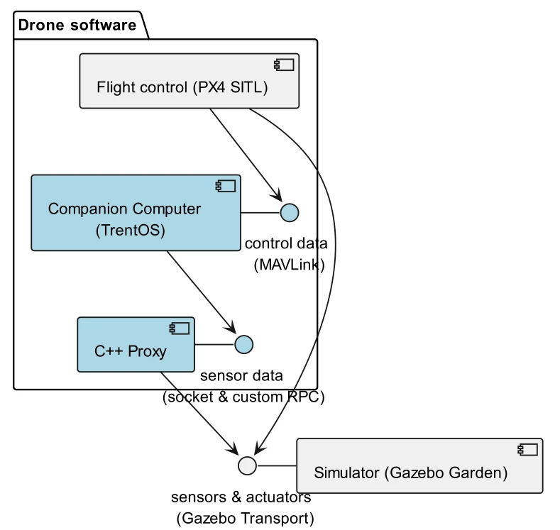
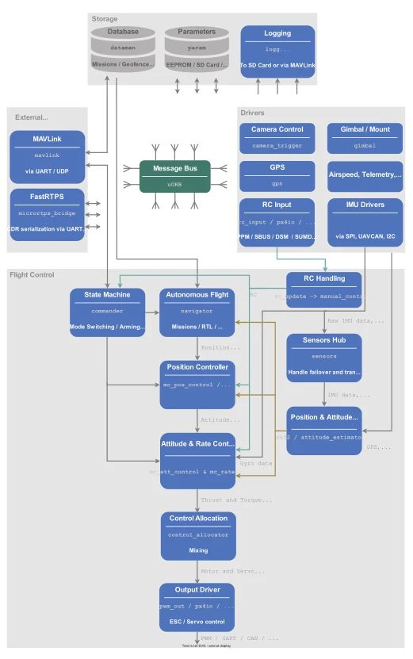
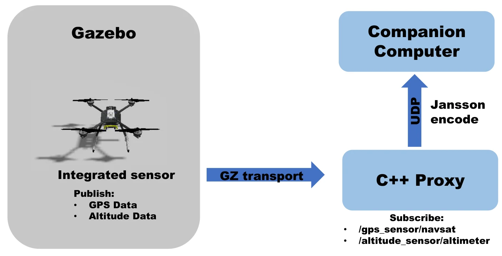
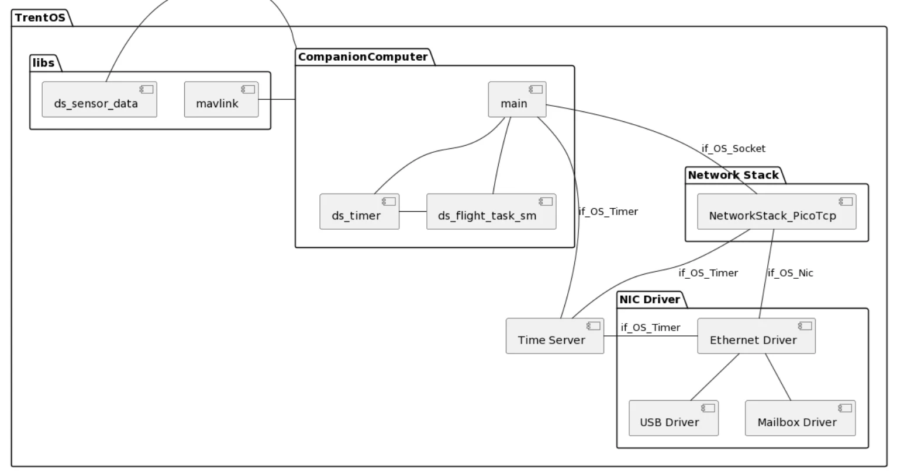
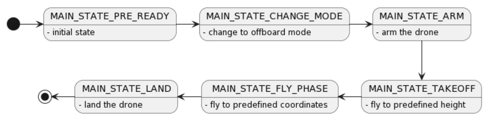
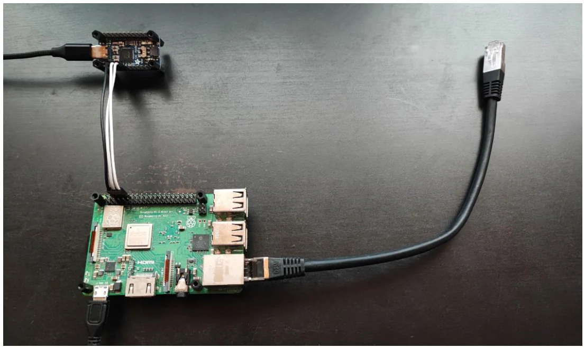
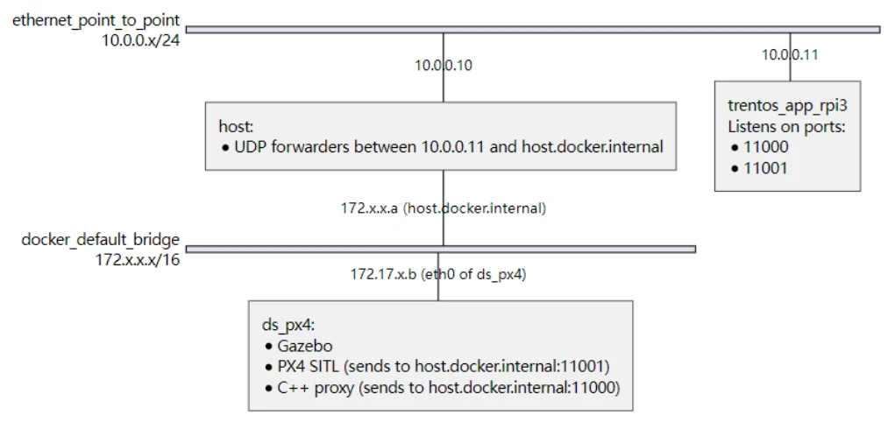

操作系统 · seL4 & TRENTOS · 慕尼黑工业大学
无人机模拟器
在基于 TRENTOS 的伴飞计算机（Companion Computer）上运行飞行任务，向 PX4 发送 MAVLink 指令，依据 GPS 和高度传感器数据，让 Gazebo 中的模拟无人机飞往预定目的地。
项目概览
目标：在伴飞计算机（TRENTOS）上实现飞行任务，向 PX4 发送执行器 MAVLink 消息，利用 Gazebo 提供的 GPS 和高度传感器数据，引导模拟无人机飞到预定目的地。
系统架构
系统由四个组件构成：
- Gazebo Garden——仿真器
- PX4——飞控程序（SITL）
- C++ 代理（Proxy）——把仿真器的传感器数据转发给伴飞计算机
- 基于 TRENTOS 的伴飞计算机——运行飞行任务

PX4 SITL（飞控程序）
PX4 是什么？
“无人机的大脑”。其架构由并发模块组成，模块之间通过 uORB 消息总线异步通信，并通过 MAVLink 与外部世界交互。
如何通信？
通过 PX4 启动配置及其预定义的 MAVLink 通道。
通信内容是什么？
飞行模式（尤其是 offboard 模式）以及标准 MAVLink 消息。

对 PX4 的补丁
PX4 几乎具备所需的一切——只是 PX4 为 Gazebo 提供的默认无人机模型没有 GPS 和高度传感器。模型使用基于 XML 的 SDF 格式描述，因此我们对 PX4-Autopilot 仓库打了补丁，加入：
- 自定义无人机模型
- 自定义世界（world）
- 自定义（精简的）MAVLink 消息通道
C++ 代理与 Gazebo
两个核心问题：如何从 Gazebo 获取传感器数据，以及如何与 TRENTOS 通信。
Gazebo 是一个三维机器人仿真器，具有用于修改模型的插件系统和发布-订阅式通信机制。需要完成的工作是：(1) 传感器集成；(2) 世界场景修改。

/gps_sensor/navsat 和 /altitude_sensor/altimeter，用 Jansson 编码为 JSON，再经 UDP 转发。伴飞计算机与 MAVLink
MAVLink 是一种二进制遥测协议，也是一个与传输层无关的库。使用到的主要指令：
| 指令 | 在飞行任务中的作用 |
|---|---|
MAV_CMD_DO_SET_MODE | 将 PX4 切换到 offboard 模式 |
MAV_CMD_COMPONENT_ARM_DISARM | 解锁（Arm）无人机 |
SET_POSITION_TARGET_LOCAL_NED | 发送位置设定点（起飞高度、目标坐标） |
MAV_CMD_NAV_LAND | 降落 |

状态机

PRE_READY初始状态- →
CHANGE_MODE切换到 offboard- →
ARM解锁- →
TAKEOFF升至预定高度- →
FLY_PHASE飞往预定坐标- →
LAND降落
最终部署
硬件

网络架构
树莓派 3 上的 TRENTOS 应用通过以太网与主机相连（点对点网络 10.0.0.x/24）。主机在 10.0.0.11 与 host.docker.internal 之间转发 UDP；Docker 内的 ds_px4 容器运行 Gazebo、PX4 SITL（发往 11001 端口）和 C++ 代理（发往 11000 端口）。

项目细节
遇到的问题
- Jansson：
sys_clock_gettime()未实现 - Docker 图形界面（需要关闭 X11 认证）
- NixOS 上的防火墙
- QEMU 上的 socket 无法承受大流量
OS_Socket_recvfrom()的 bug（还是特性？）：没有收到数据时，srcAddr会被设为上一次收到数据的地址- 无法使用更复杂的世界场景（部分模型加载耗时很长）
改进方向
- UDP 转发很麻烦——编写更好的工具脚本，一次性启动所有组件（而不是开一堆终端）；生产环境中使用
iptables。 - 让飞行任务更健壮——处理 PX4 和 Gazebo 被终止后重启的情况。
仓库结构
.
├── Dockerfile # `ds_px4` 容器的 Dockerfile
├── external # 外部依赖存放位置
│ ├── mavlink/ # 预编译的 C/C++ MAVLink 头文件
│ └── PX4-Autopilot/ # PX4 仓库
├── Trentos # 手动添加的 TrentOS 目录
│ ├── docker/ # TrentOS docker 容器
│ └── sdk/ # TrentOS SDK
├── px4.patch # 对 PX4-Autopilot 的补丁
├── scripts/ # 工具脚本
└── src # 源代码
├── apps
│ ├── proxy/ # C++ 代理源码
│ └── trentos/ # TrentOS 应用（伴飞计算机）源码
└── libs/ # proxy/ 与 trentos/ 共用的模块